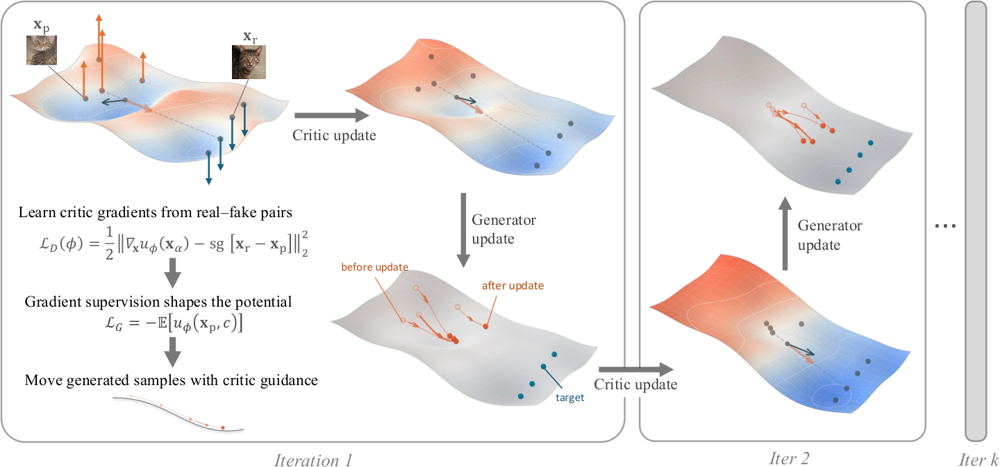

Paper Notes
Question: What Gradient Should a Critic Supply?
普通 GAN 以真假标签或分数差训练 discriminator，generator 实际使用的是 discriminator 对生成样本的输入梯度。NextGAN 把这个梯度本身作为监督对象：它不仅需要区分样本，还应在比较空间中给出有方向和幅度的移动信号。
这里的 reference 不一概等于相机拍摄的真实数据。ImageNet 部分使用图像数据，视频部分使用 rCM 发布的 Wan_datasets 250K 子集，其中参考视频由 Wan2.1-14B 离线生成。teacher-free 仅指训练迭代不查询在线 teacher score 或 trajectory。
Paper Notes
Reading Figure 2: Pair, Interpolate, Regress, Update

Xinhao Lou et al. (2026). Original Figure 2, unchanged. CC BY-NC-SA 4.0 (https://creativecommons.org/licenses/by-nc-sa/4.0/). · Paper & Caption ↗
给定同一条件 c，参考样本与 generator 的随机噪声独立采样。冻结映射 f 把两者变成 xr 与 xp，位移 Δ=xr−xp；在两端点之间均匀抽 α，得到 xα。图 2 左侧用这些点训练标量 critic uφ，其输入梯度应接近 Δ。
接着固定 critic，在生成端点 xp 上增大势 uφ(xp,c)，而不是把 generator 拉到这次随机配对的 xr。更新 generator 后重新采样配对、继续训练 critic，图右侧展示这种交替。critic 不单独接收 α，因此同一点处来自不同路径的监督会被平均。
为什么随机配对不会变成胡乱重建？在理想总体分布相同时，交换参考/生成端点并把 α 换为 1−α，会保持查询位置却翻转位移，条件平均方向为零。但有限网络和有限 batch 不等于精确总体解，不能把这个对称性说成训练必然收敛。
Δ = xr − xp xα = (1−α)xp + αxr, α ~ Uniform(0,1) LD = 1/2 E ||∇x uφ(xα,c) − stopgrad(Δ)||² LG = −E uφ(f(Gθ(z,c)),c)
Paper Notes
The Adversarial Dual and Its Boundary
沿两点线段积分 ∇u 与 Δ 的内积，会得到端点势差 u(xr)−u(xp)。展开平方后，critic 的梯度回归等价于最大化 reference/generated 势差，并减去沿插值位置的梯度能量。这个等价关系要求固定 generator，并对均匀插值位置取期望；两个有限 batch 估计的实际更新不必相同。
梯度能量惩罚是 ||∇u||²，不是 WGAN-GP 的 (||∇u||−1)²。理论分布匹配也发生在选择的 representation space，并依赖足够丰富的势函数族；若 f 丢掉某种运动信息，特征分布匹配不保证原视频的该信息正确。
generator 仍在端点更新，没有对改变中的插值分布求完整导数，因此它一般不等于对论文定义的 discrepancy 做完整梯度下降。这个限制在附录明确说明。
LD = const + E[uφ(xp,c) − uφ(xr,c)]
+ 1/2 E ||∇x uφ(xα,c)||²Paper Notes
Video Implementation and Gradient Flow
视频使用 Wan2.1 的 LoRA，rank 与 scaling 都是 256，作用于 attention projections 和 feed-forward layers。关闭 adapters 后，冻结的原 backbone 同时充当 representer：从干净视频 latent 提取零起始 blocks 7、11、15 的特征，model timestep 固定为 500，但不向这些 latent 加噪；做 2×2 空间池化而保留时间维度。每层接独立的 text-conditioned scalar head。
更新 critic 时端点 detach，梯度回归还需要对 ∇x uφ 关于 φ 求导。更新 generator 时冻结 critic 和 f 的参数，但输入梯度必须经过 uφ→f→Gθ。把 f 包进 no_grad 会切断训练，冻结权重与切断计算图是两回事。
backward simulation 从噪声出发交替做 clean estimate 与重新加噪，训练中随机采样 rollout 长度。只有最后一次 denoising 保留 generator 梯度，之前步骤 detach。推理丢弃 representer/critic，只用生成器和必要的 VAE decoder；论文中的同一模型可以按不同采样预算运行。
Paper Notes
Evidence and Counterexamples
视频评测为 832×480×81、16 FPS，主表报告全部 16 维 VBench。1.3B 的 1/2/4 步 Total 分别为 80.80/83.13/82.72；两步 rCM 为 81.88、AnyFlow 为 82.66。这里两步比四步更好，不能把更多 steps 自动解释为更高质量。
四步 1.3B 上 AnyFlow 的 Total 是 83.54，高于 NextGAN 82.72。14B 两步 NextGAN 为 82.73，AnyFlow 为 83.89；AnyFlow 在表中 14B 的各个预算都领先。论文展示的是一种有竞争力的训练目标，不是全面取代现有蒸馏。
同为四步 1.3B 的目标对照中，GAN/WGAN/TBSM GAN corner/NextGAN 的 Total 为 81.38/60.71/73.07/82.72。八高斯 toy experiment 的有效模式数为 NextGAN 7.995、普通 GAN 2.770；这提供机制诊断，不能作为真实视频全面避免 mode collapse 的证明。
ImageNet 的 1-step FID 1.54 或 adversarial form 的 1.36 是图像结果。它们不能与视频 VBench 混用。论文也说明部分图像 baseline 来自原论文、评估器可能不同，定量比较需保留该口径。
Paper Notes
Release Status and Relation to Radian
截至本次阅读，官方 README 的 TODO 仍包含 Wan2.1 代码与模型 checkpoints；当前 ImageNet 实现用 unit-weight field regression，README 明确指出它与论文 Appendix A 的回归缩放存在差异。仓库另列复现实验 FID，不应替换本文所读 v1 的论文结果。视频梯度路径以上按论文及附录算法解释，未声称已经核验完整视频训练实现。
与 Radian 的相似之处是训练期使用冻结表征，并在推理时移除辅助模块。差别是 Radian 在 DMD 之外加 representation adversarial loss；NextGAN 的核心是如何训练 scalar critic 的输入梯度，视频 representer 则直接用原 Wan backbone。表征选择与训练目标需要分别消融，不能统称为“加语义就有效”。
Discussion
Reading Questions
Why are random pairs not a pixel-reconstruction target?
位移用于学习 critic 梯度的条件平均，generator 优化端点势值，并不直接拟合每次随机参考。
Does teacher-free mean no teacher-generated data?
不。视频使用 Wan2.1-14B 离线生成的参考数据，只是不做在线 teacher score/trajectory 查询。
Can the frozen representer use no_grad during generator updates?
不能。它的参数不更新，但必须保留对输入的梯度才能把 critic 信号送回 generator。
Are video code and checkpoints fully released?
本次读取的官方 README 仍把 Wan2.1 代码与 checkpoints 列为 TODO；不能据 ImageNet 代码推定视频复现已完整可用。
References
The reproduced figure retains its original content and license. Analysis is based on the cited paper version; repository availability is checked separately from paper results.
Verified on 2026-11-24. Paper results refer to the linked versions. Repository references were checked on this date.